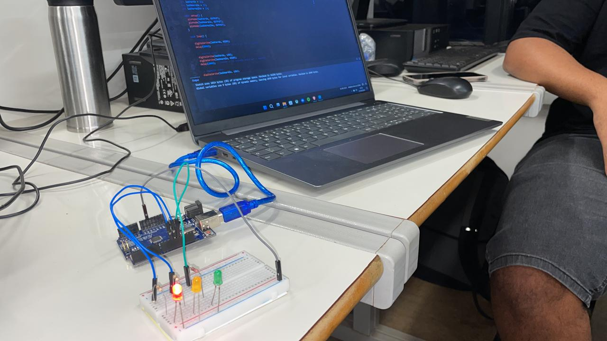
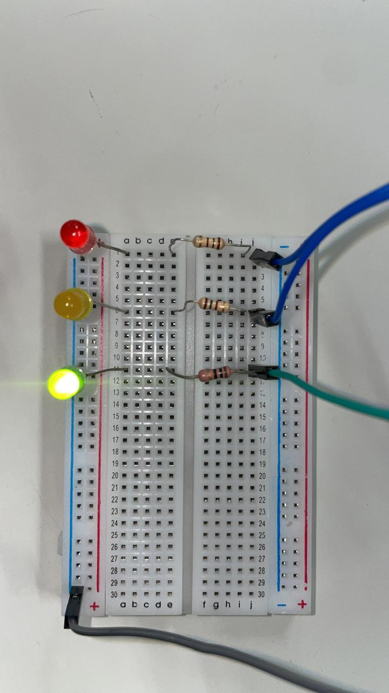

Objetivo: O objetivo deste experimento é criar um sistema simples que simula o funcionamento de um semáforo, utilizando uma placa Arduino, uma protoboard, três LEDs (vermelho, amarelo e verde), resistores, e jumpers para conexão. O código é implementado para controlar o acendimento dos LEDs, simulando as fases de um semáforo real.
A montagem do circuito foi feita na protoboard conectada ao Arduino UNO. O LED vermelho, amarelo e verde foram conectados a portas digitais diferentes do Arduino, e cada um deles está ligado em série com um resistor de 220Ω para limitar a corrente.
 
void setup() {
pinMode(2, OUTPUT); // LED verde
pinMode(3, OUTPUT); // LED amarelo
pinMode(4, OUTPUT); // LED vermelho
}
void loop() {
digitalWrite(4, HIGH); // Liga o vermelho
delay(5000); // Aguarda 5 segundos
digitalWrite(4, LOW); // Desliga o vermelho
digitalWrite(3, HIGH); // Liga o amarelo
delay(2000); // Aguarda 2 segundos
digitalWrite(3, LOW); // Desliga o amarelo
digitalWrite(2, HIGH); // Liga o verde
delay(5000); // Aguarda 5 segundos
digitalWrite(2, LOW); // Desliga o verde
}
O código acima é responsável por simular as fases de um semáforo: o LED vermelho permanece aceso por 5 segundos, seguido pelo LED amarelo por 2 segundos e, finalmente, o LED verde por 5 segundos. Este ciclo se repete continuamente, representando as fases de parada, atenção e avanço de um semáforo comum.
Este experimento mostrou como utilizar um Arduino para simular um sistema de controle de semáforo simples. A programação dos LEDs é facilmente controlada através das portas digitais do Arduino, demonstrando como um semáforo básico pode ser implementado em um ambiente de prototipagem rápida.